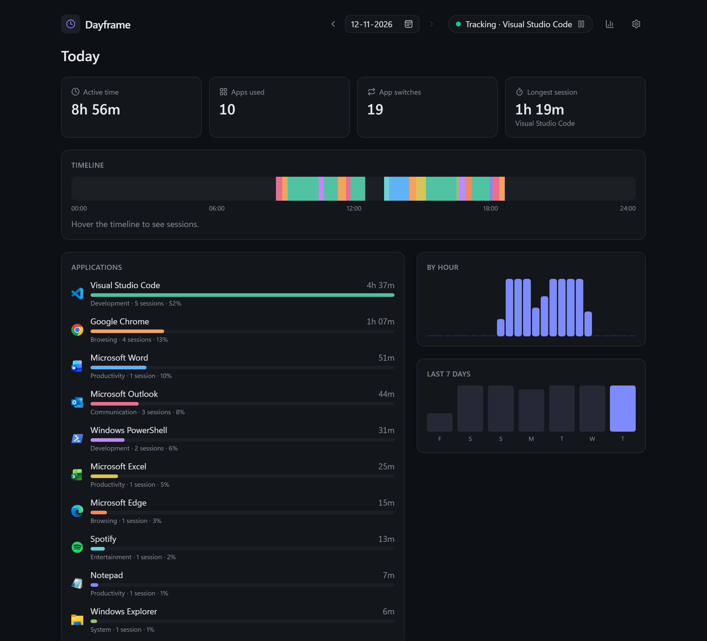
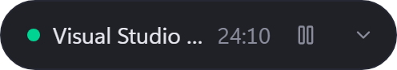
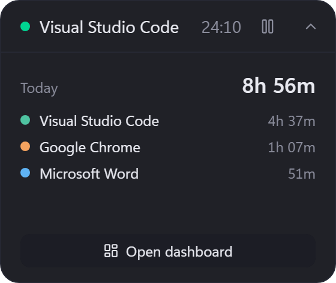
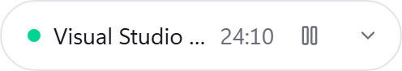
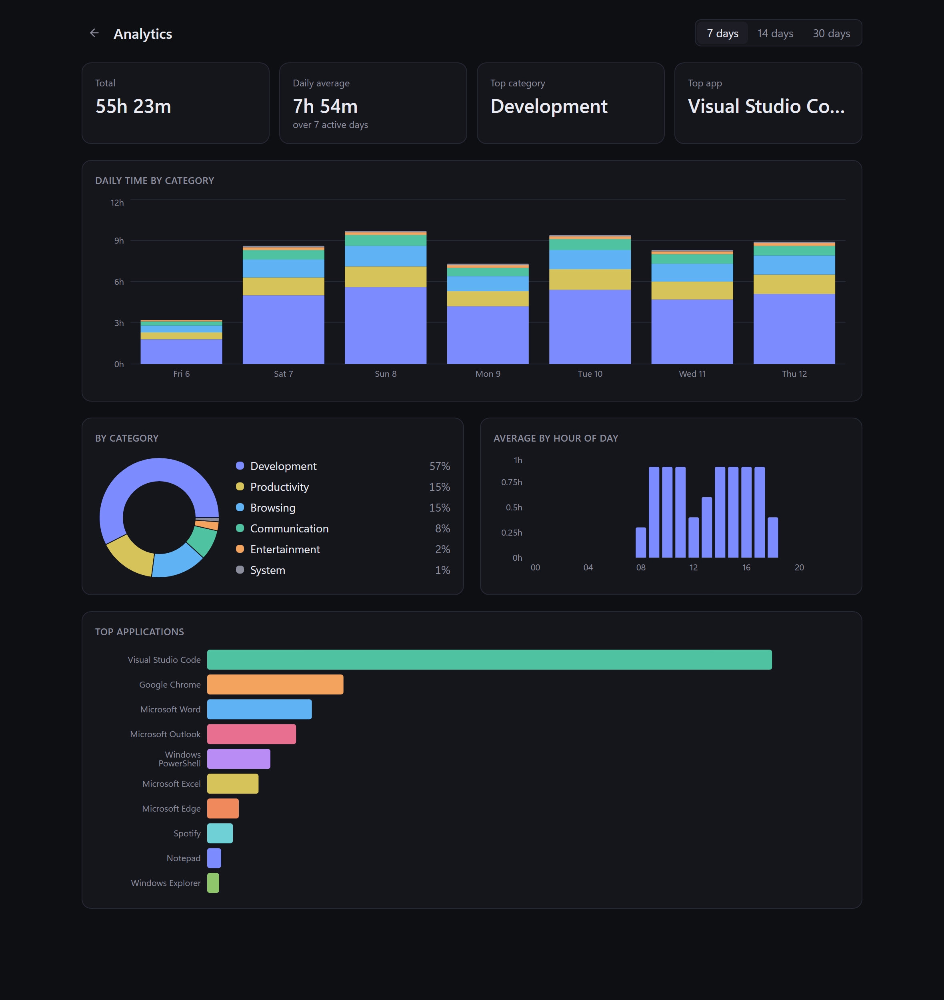
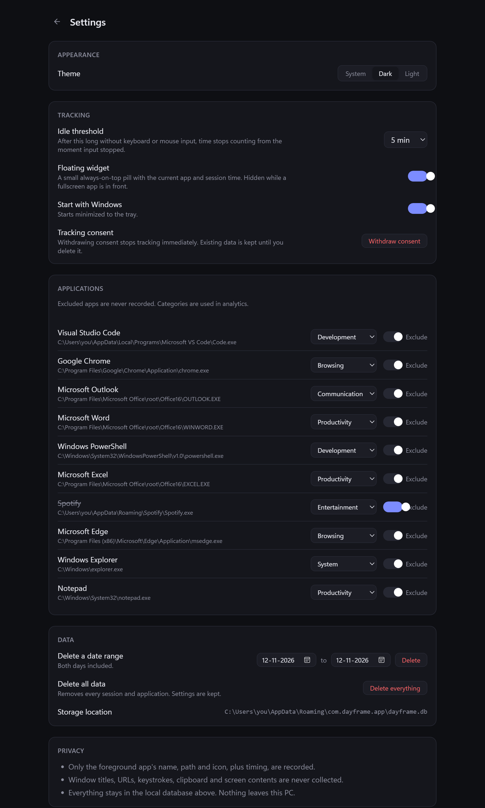
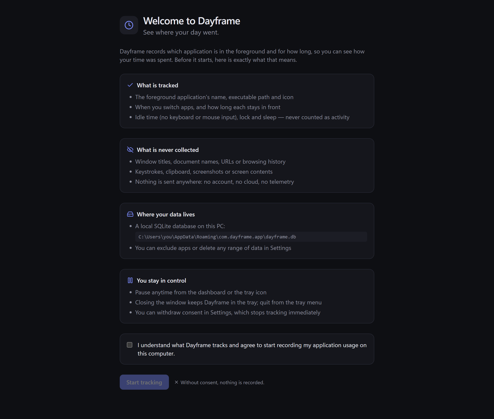
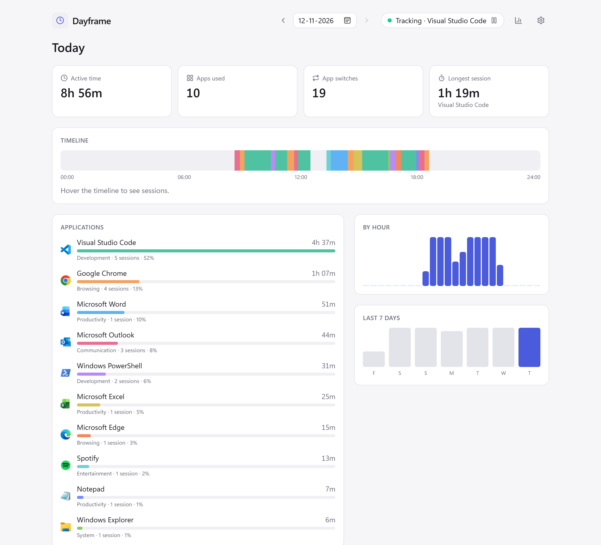

A privacy-first time tracker for Windows. It notices which app you are using,
for how long, and turns your day into a timeline you can read at a glance.
| Goal | How the code meets it |
|---|---|
| Correct time | A pure state machine with unit tests for switching, idle, sleep gaps, lock, exclusions, pause and clocks going backwards. |
| Crash safe | The open session is written to disk every 30 s, so a crash or power cut loses at most 30 s. |
| Light | One background thread waking once a second; about 32 MB of memory; a 1.94 MB installer. |
| Consent first | Nothing is recorded until you tick an explicit consent box on first launch. |
| Local only | A strict Content Security Policy allows only local resources and the app's own IPC. |

Dashboard (dark): live tracker pill, four tiles, the day timeline, applications with their real icons, by-hour bars and the clickable 7-day strip.

Widget, collapsed (248 × 44): status dot, current app, live session timer, pause, expand.

Widget, expanded (280 × 236): today's total and top three apps. Everything outside the card is transparent.

Widget in the light theme.
Open Dayframe · Pause tracking · Show widget · Settings · Quit Dayframe. The tooltip reads "Dayframe · tracking", "· paused" or "· tracking off". Left-click opens the dashboard.

Analytics, 7 days: totals, stacked daily time by category, category donut, average by hour, top apps.

Settings: theme, idle threshold, widget, autostart, consent, and per-app category and exclusion.

First launch: what is tracked, what is never collected, where data lives, and an explicit consent box. The button stays disabled until it is ticked.

The dashboard in the light theme. "System" follows Windows live.
| Layer | Choice | Why |
|---|---|---|
| Shell | Tauri 2 | Native window, tray, single instance and autostart plugins; uses the system WebView2 so the installer stays under 2 MB (Electron ships a whole browser). |
| Core | Rust 2021 | Memory-safe Win32 calls, a cheap background thread, and fast tests for the state machine. |
| Win32 | windows 0.62 | Microsoft's official bindings: foreground window, process image name, version resources, idle time, input desktop, monitor info, icons. |
| Storage | SQLite via rusqlite (bundled) | One file, transactional, WAL mode for crash safety; no server. |
| Time | chrono | Local hour of day for analytics across DST changes. |
| UI | React 19 + TypeScript | Typed command wrappers in lib/api.ts; components per screen. |
| Styling | Tailwind CSS 4 | Design tokens as CSS variables; dark and light swap one attribute. |
| Charts | Recharts 3 | Analytics only, lazy-loaded so the dashboard and widget stay small. |
| Icons | lucide-react | UI icons. App icons come from the executables themselves. |
| Build | Vite 8, NSIS | Fast dev server on port 1420; per-user installer with no admin rights. |
| Tests | cargo test, Vitest | 30 Rust tests and 3 frontend tests. |
dayframe.exe (release, LTO, stripped)tracker/mod.rstracker://state only on change.tracker/engine.rsdb.rs · %APPDATA%\com.dayframe.app\dayframe.db · WALtray.rs: menu, tooltip, pause, widget toggle| Thing | Type | Who touches it |
|---|---|---|
| Database | Mutex<Connection> | Tracker thread writes; commands read and write; icon extraction happens outside the lock. |
| Control | atomics | consented, paused, reload, reopen, stop: flipped by commands and tray, read by the loop each tick. |
| Snapshot | Mutex<Snapshot> | Status, app name, session start. Read by tracker_state. |
| WidgetState | atomics | Enabled flag and current fullscreen state. |
Startup order matters: open DB → recover → read consent and widget flag → manage state → spawn tracker → build tray → show widget → show main window unless launched with --minimized. On quit, stop is set and the thread is joined so the open session ends at quit time.
Sample { now_ms, app, idle_ms, locked }. The engine answers with zero or more actions. These rules are the whole product.| Situation | What the engine does |
|---|---|
| Same app, still active | Nothing, except a Checkpoint every 30 s that moves the session end forward. |
| App switch | Close the old session at now and open the new one at now. Sessions never overlap. |
| Idle ≥ threshold | Close at now − idle_ms: the moment input stopped. Idle time is never counted. |
| Idle below threshold | Still counted. Reading or watching without touching the mouse is real use. |
| Gap > 15 s between ticks | The PC slept or hibernated. Close at the last tick, not at wake-up. |
| Clock went backwards | Treated like a gap; never produces a negative session. |
| Locked, paused, excluded, no app | Close at now; reopen when the condition ends. |
Coloured = counted. Line 2: the session ends where input stopped (first mark), not where idle was detected (second mark). Hatched = not recorded.
Every rule above is a function of the sample and the engine's memory, so it can be tested with fake timestamps in microseconds instead of waiting minutes for a real idle. The Win32 code and the database stay outside; the loop just glues them. Nine engine tests cover exactly the rows in the table.
applications id · exe_key UNIQUE · display_name · executable_path · category
excluded · icon_png (cached) · first_seen_at
activity_sessions id · application_id → applications (CASCADE) · started_at · ended_at
duration_seconds · project_id → projects · CHECK (ended_at >= started_at)
projects id · name · color · created_at (reserved for later)
settings key · value (consent, theme, idle, widget …)
indexes started_at · ended_at · application_id
ended_at = started_at and pushed forward by each checkpoint. After a crash the row is already valid; startup recovery only recomputes duration_seconds.MIGRATIONS list tracked by PRAGMA user_version. Never edit an applied one; add the next.intervals(from, to) returns every session overlapping the window, cut to it. A session from 23:30 to 00:45 gives 30 min to one day and 45 to the next.delete_range trims or splits sessions that straddle the edges, so only the chosen time disappears.The database never decides what "today" is. The frontend computes local midnights (lib/time.ts) and passes them as bounds. On the day clocks go forward a day is 23 hours, so the hourly chart gets 23 buckets; on the day they go back, 25. The analytics "average by hour" maps each bucket to its real local hour with chrono::Local, so 02:00 on a DST day is not mislabelled.
If you delete data while a session is open, the next checkpoint could extend a row that no longer exists, or re-create time you just removed. The delete command sets reopen while still holding the DB lock; the tracker checks it under the same lock and forgets its open session before writing anything else.
src-tauri/src, React in src.| Path | What it does |
|---|---|
| src-tauri/src/lib.rs | App setup, managed state, commands for stats and icons, startup and shutdown. |
| src-tauri/src/tracker/engine.rs | The pure tracking state machine and its tests. |
| src-tauri/src/tracker/win.rs | Win32 sampling: foreground app, idle, lock, fullscreen. |
| src-tauri/src/tracker/mod.rs | The 1 s loop, Control flags, Snapshot, DB writer. |
| src-tauri/src/db.rs | Schema, migrations, queries, clipping, deletion, recovery. |
| src-tauri/src/stats.rs | Day summary, timeline merge, hourly buckets, range analytics. |
| src-tauri/src/icons.rs | Executable icon → PNG, cached in the DB. |
| src-tauri/src/categories.rs | Default category from the exe name; the 8 categories. |
| src-tauri/src/settings.rs | Settings, consent, exclusions, categories, deletion commands. |
| src-tauri/src/tray.rs | Tray menu, labels and tooltip. |
| src-tauri/src/widget.rs | Widget window, position, fullscreen hiding. |
| src-tauri/tauri.conf.json | Window, CSP, bundle (NSIS) config. |
| src-tauri/capabilities/ | Which windows may call what. |
| src/main.tsx | Picks Widget or App by window label. |
| src/App.tsx | Consent gate, view switch, theme. |
| src/components/ | Dashboard, Timeline, AppIcon, Analytics, Settings, Onboarding, Widget. |
| src/lib/api.ts | Typed wrappers for every command and event. |
| src/lib/time.ts | Local-day bounds and formatting (with Vitest tests). |
| src/lib/colors.ts | Per-app and per-category colours. |
| src/index.css | Tailwind and the design tokens for both themes. |
| README.md · ARCHITECTURE.md | Overview and design notes. |
| SESSION_HANDOFF.md | Build history and what was verified, chunk by chunk. |
Dayframe_0.1.0_x64-setup.exe. It installs for your user only; no admin rights.You need Windows 10/11, Node.js 20+, Rust stable with the MSVC toolchain and the Tauri prerequisites (Visual Studio Build Tools with "Desktop development with C++").
git clone https://github.com/goprocker/Dayframe cd Dayframe npm install npm run tauri dev # run with hot reload (Vite on port 1420) npm run tauri build # release exe + installer
The installer lands in src-tauri/target/release/bundle/nsis/. The first Rust build takes several minutes; later ones are incremental.
| What | Location |
|---|---|
| Database | %APPDATA%\com.dayframe.app\dayframe.db (plus -wal and -shm files) |
| WebView data | %LOCALAPPDATA%\com.dayframe.app\ |
| Autostart | A Run registry entry for your user, launching with --minimized |
App switches counts changes between timeline blocks. Longest session is the longest merged block of one app. Daily average in Analytics divides by days that had any activity, so a weekend off doesn't drag it down.
| Setting | Options | Effect |
|---|---|---|
| Theme | System · Dark · Light | System follows Windows live. Both windows switch together. |
| Idle threshold | 1, 2, 3, 5, 10, 15, 30 min | How long without input before time stops counting. The tracker reloads it on the next tick. |
| Floating widget | On · Off | Shows or hides the always-on-top pill. Same as the tray item. |
| Start with Windows | On · Off | Launches to the tray at sign-in. |
| Tracking consent | Withdraw | Stops tracking at once and returns to onboarding. Existing data is kept. |
| Applications | Exclude · Category | Excluded apps are never recorded from now on. Categories feed Analytics. |
| Delete a range | From and to dates | Removes tracked time in those days, trimming sessions at the edges. |
| Delete all data | Confirm twice | Removes every session and app record, then compacts the file. Settings stay. |
| Privacy | — | A plain summary of what is and isn't recorded, next to the data folder. |
Defaults are guessed from the executable name in categories.rs; every app can be changed in Settings.
Destructive buttons switch to a "Confirm?" state inline instead of opening a native dialog. Native dialogs block the WebView and are easy to click through by habit.
cd src-tauri && cargo test # 30 Rust tests npx vitest run # 3 frontend tests npm run build # TypeScript check + Vite build
| Area | Tests |
|---|---|
| Engine (9) | Switching without overlap, idle cut-back, below-threshold idle, sleep gap, lock/unlock, exclusions, pause/resume, periodic checkpoints, clock going backwards. |
| Database | Idempotent migrations, app upsert, interval clipping, end ≥ start, crash recovery, range deletion, settings. |
| Stats | Totals, switches, longest block, hourly split, 23/25-hour DST days, midnight-spanning session, empty day, range merge, local-hour mapping. |
| Windows | Exe-name fallback, reading Notepad's real file description and icon, idle ≥ 0. |
| Widget | Parsing the saved position. |
| Frontend | Local-day bounds and duration formatting. |
msedgewebview2.exe holding the data folder, so the next launch panics. End those processes, then relaunch.dayframe.db with any SQLite browser while the app is closed. Times are UTC ms.log::error! and never crash the loop.Conventional Commit subjects with a body derived from the actual diff; one logical change per commit; work is shipped in chunks, each ending with an updated SESSION_HANDOFF.md.
There is no network code. The Content Security Policy is default-src 'self' with only local images and IPC allowed, so even a bug in the UI could not send data out.
| Symptom | Fix |
|---|---|
| Nothing is being recorded | Check the header pill. "Paused" → resume. "Excluded app" → un-exclude in Settings. Onboarding showing → consent was withdrawn. |
| Less time than expected | Idle threshold may be short; raise it. Time away from the keyboard past the threshold is removed on purpose. |
| An app shows as "Protected application" | It runs elevated (as administrator). Windows does not let a normal process read its path. |
| Widget not visible | Turn it on from the tray. If a fullscreen window is in front it hides until you leave fullscreen. |
| Widget off-screen after unplugging a monitor | The saved position is only reused if it lies on a connected monitor; otherwise it returns to the top-right. |
| Second window opens instead of the first | It shouldn't: single-instance focuses the running app. Check for an old version in Task Manager. |
%APPDATA%\com.dayframe.app and %LOCALAPPDATA%\com.dayframe.app yourself.That is Dayframe. The "glance" is a Windows call that names the program in front. The "notebook" is a small database file in your user folder. Every 30 seconds the notebook is saved, so even if the power goes out you lose at most half a minute.
The dashboard is the notebook turned into pictures: a coloured strip for the day, bars for each app, and how busy each hour was. Analytics does the same over weeks.
The widget is a sticky note on your screen showing what the stopwatch is timing right now. The tray icon near the clock is how you reach the app when its window is closed; closing the window does not stop the stopwatch.
| Word | Meaning here |
|---|---|
| Foreground window | The window receiving your keyboard input; the "app in front". |
| Executable / exe | The program file, e.g. Code.exe. Dayframe identifies apps by its path (exe_key). |
| File description | A friendly name stored inside an exe's version resource ("Visual Studio Code"). |
| Session | One continuous stretch of one app, stored as a start and end time. |
| Interval | A session cut to a time window, e.g. one day. |
| Block | Neighbouring intervals of the same app merged for the timeline. |
| Checkpoint | Moving the open session's end forward on disk every 30 s. |
| Idle threshold | How long without input before time stops counting. |
| State machine | Code that keeps a little memory and reacts to inputs by rules; the engine. |
| Pure function | Same inputs, same outputs, no side effects. Easy to test. |
| Tauri | A framework for desktop apps with a Rust backend and a web UI. |
| WebView2 | Microsoft Edge's engine embedded in apps; draws Dayframe's UI. |
| Command / invoke | A Rust function the UI can call, like a local API. |
| Event / emit | A message Rust pushes to the UI, e.g. tracker://state. |
| Capability | Tauri's allow-list of what each window may call. |
| CSP | Content Security Policy: rules for what the UI may load or connect to. |
| SQLite / WAL | An embedded database in one file; Write-Ahead Logging makes writes crash-safe. |
| Migration | A numbered schema change applied once, in order. |
| Mutex / atomic | Ways for threads to share data safely: a lock, or a single value changed in one step. |
| UTC ms | Milliseconds since 1970 in UTC; the same everywhere, no time zones. |
| DST | Daylight saving time; makes some local days 23 or 25 hours long. |
| NSIS | The tool that builds the Windows installer. |
| Tray | The icon area by the clock on the taskbar. |
GetForegroundWindow → GetWindowThreadProcessId → OpenProcess (limited query rights) → QueryFullProcessImageNameW gives C:\…\Code.exe. The description "Visual Studio Code" comes from a cache, read once from the version resource.GetLastInputInfo vs GetTickCount gives idle ms (wrap-safe). OpenInputDesktop named "Default" means unlocked.engine.tick(sample) sees a different app than before and returns [Close(now), Open(Code, now)].now and inserts a new one starting at now.tracker://state is emitted. The header pill and widget update; the widget timer starts ticking locally.ended_at forward.day_summary(from, to) with local midnights. db::intervals clips sessions to the day; stats::summarize builds totals, per-app usage, hourly buckets and merged timeline blocks.app_icons. ExtractIconExW → bitmap → PNG, done outside the DB lock, then cached forever.t = 10:00:00 last input
t = 10:05:00 idle_ms = 300000 ≥ threshold → Close(end = 10:00:00)
status Idle; snapshot emitted; widget dot turns grey
t = 10:12:40 input again, same app → Open(Code, 10:12:40)
The 12 minutes 40 seconds away are never written, and the 5 minutes it took to notice are taken back.
tracker://state only when something changes; the dashboard refreshes only while visible; the widget fetches totals only while expanded.user_version; old databases upgrade in order, tested to be idempotent.| Problem | What Dayframe does | Limit |
|---|---|---|
| Detecting sleep | A gap of more than 15 s between 1 s ticks means the machine was suspended; close at the last tick. | Not using power broadcast messages; a 15 s system freeze also counts as a gap. |
| Detecting lock | If the input desktop isn't "Default" (or can't be opened), the session is locked. | Not using WTS session notifications; UAC prompts also count as locked, briefly. |
| Idle while reading | Below the threshold, no input still counts as use. | A long video without touching anything ends at the threshold; raise it if needed. |
| Elevated apps | Recorded as one "Protected application". | Can't tell elevated apps apart without running elevated, which Dayframe won't. |
| Midnight | Sessions are clipped to each day's bounds. | — |
| DST | 23/25 buckets; local hour mapping in analytics. | The 7-day strip shows totals only, unaffected. |
| Fullscreen | Foreground rect covers its monitor; desktop and shell windows excluded. | A borderless maximised window that exactly covers the screen also hides the widget. |
| Window creation | The widget is created from setup, the tray or an async command. | Creating a window from a synchronous command deadlocks WebView2 on Windows. |
| Multiple monitors | The widget's saved position is reused only if it lies on a connected monitor. | No per-monitor memory yet. |
| Browsers | Counted as one app. | By design: no tab titles or URLs, so no per-site breakdown. |
Tauri uses the WebView2 already in Windows, so the installer is under 2 MB and idle memory is about 32 MB. The backend is Rust, which suits Win32 calls and a long-running background thread.
When idle reaches the threshold, the engine closes the session at now − idle_ms: the moment input stopped. So the time spent waiting to notice is removed as well.
Sessions are stored closed and checkpointed every 30 s. On startup recovery only recomputes durations. Worst case: 30 s lost.
The loop ticks every second. If more than 15 s passed, or the clock went backwards, the machine was suspended; the session ends at the last tick.
Store UTC ms. The UI computes local midnights and passes bounds; sessions are clipped to them. Bucket count equals the day's real length; analytics map buckets to local hours with chrono.
A pure state machine takes a sample struct and returns actions. Tests feed fake timestamps; Win32 and SQLite are outside it.
Deleting data while a session is open could let the next checkpoint extend a deleted row. The delete sets a flag under the DB lock; the tracker checks it under the same lock and forgets its session first.
Derived data goes stale when you delete or re-categorise. Sessions are the single source of truth; aggregation is fast enough on read with indexes on start and end.
The sampler never calls title APIs; there's no network code; the CSP blocks outbound connections; tracking is gated on stored consent.
While enabled, each tick compares the foreground window's rect with its monitor's rect (ignoring the desktop and shell). Changes toggle the window's visibility.
WTS and power notifications instead of heuristics, projects, CSV export, and per-monitor widget positions.
npm install npm run tauri dev npm run tauri build npm run build npx vitest run cd src-tauri && cargo test
| Tick | 1 s |
| Checkpoint | 30 s |
| Sleep gap | > 15 s |
| Idle default | 5 min (1–120) |
| Timeline merge | gap ≤ 2 s |
| Dashboard refresh | 30 s, visible only |
| Widget | 248×44 / 280×236 |
| Analytics range | ≤ 92 days |
| Day range | ≤ 26 h |
app_info · tracker_state · day_summary · range_totals · range_summary · app_icons · get_settings · set_tracking_consent · set_tracking_paused · set_theme · set_idle_threshold · set_autostart · list_apps · set_app_excluded · set_app_category · delete_range · delete_all_data · set_widget_enabled · set_widget_expanded · save_widget_position · open_dashboard
tracker://state (snapshot on change) · navigate (tray → Settings) · theme (keeps windows in sync)
tracking_consented · theme · idle_threshold_ms · widget_enabled · widget_position
WM_POWERBROADCAST.